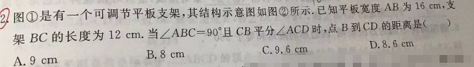
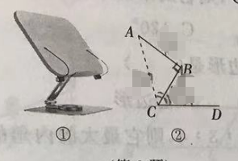

p22 平板支架与角平分线
选择填空
勾股定理角平分线性质点到直线距离面积法
★★★☆

📷 点击查看原图
图①是一个可调节平板支架，其结构示意图如图②所示。已知平板宽度 AB=16 cm，支架 BC=12 cm。当 ∠ABC=90∘ 且 CB 平分 ∠ACD 时，点 B 到 CD 的距离是（ ）
A. 9 cm B. 8 cm C. 9.6 cm D. 8.6 cm

📌 知识点总结
- 勾股定理：在直角三角形中，a2+b2=c2。
- 面积法求斜边上的高：直角三角形面积 =21ab=21ch，故斜边上的高 h=cab。
- 角平分线性质：角平分线上的任意一点到角两边的距离相等。
✍️ 解题过程
第一步：在 Rt△ABC 中求斜边 AC
因为 ∠ABC=90∘，AB=16，BC=12，由勾股定理：
第二步：用面积法求点 B 到 AC 的距离
设 B 到 AC 的距离为 h，则：
S△ABC=21AB⋅BC=21AC⋅h
代入数值：
21×16×12=21×20×h
h=2016×12=20192=9.6（cm）
第三步：由角平分线性质得结论
因为 CB 平分 ∠ACD，点 B 在角平分线 CB 上，所以点 B 到 AC 的距离等于点 B 到 CD 的距离。
点 B 到 CD 的距离=9.6（cm）
✅ 答案：C. 9.6 cm
📚 南昌/江西中考类似题（同类拓展）
- 斜边上的高：在 Rt△ABC 中，∠ABC=90∘，AB=6，BC=8，AC=10，求斜边 AC 上的高。 📄 查看详细解答 →
- 等腰直角三角形中的角平分线：在等腰直角三角形 ABC 中，∠ACB=90∘，AC=BC=6，CD 平分 ∠ACB 交 AB 于 D，求点 D 到 AC 的距离。 📄 查看详细解答 →
- 角平分线上的点到两边距离：点 P 在 ∠AOB 的平分线上，∠AOB=90∘，P 到 OA 的距离为 4，求 OP 的长。 📄 查看详细解答 →